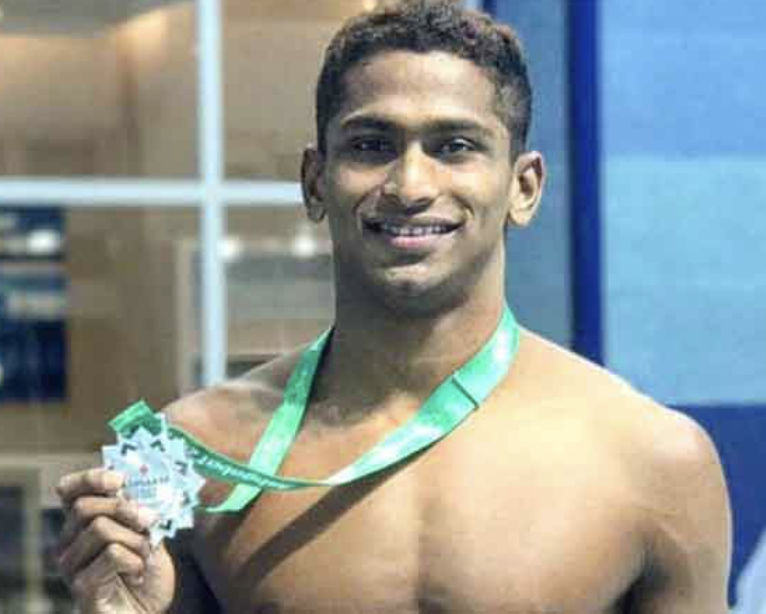

THE SOLANKI SPORTS ACADEMY - Home
- About Us
- Gallery
- Registration
| Our Team | ||
|---|---|---|
|  | ||
| Ramy Solanki Volleyball Coach |
Sunil Chetri Football Coach |
Sajan Prakash Swimming Coach |
The promotion of physical and mental well-being is crucial, and engaging in sports plays a vital role in achieving this balance. Participation in sports promotes a healthy lifestyle by enhancing cardiovascular health, muscular strength, and overall fitness. It instills valuable qualities such as self-control, cooperation, and goal-setting, which extend beyond the realm of sports and prove beneficial in various aspects of life. Sports serve not only as a means of tension release after a challenging day but also as an effective stress reliever. Furthermore, sports foster social interactions and the cultivation of lasting friendships by creating a sense of belonging and camaraderie. Through competition, individuals can develop attributes like willpower, resilience, and the ability to gracefully accept both success and failure. Sports offer a shared experience that connects people, whether they are actively participating or observing as spectators.
Volleyball is a team sport that involves two teams, each comprising six players, separated by a net.
The objective is to score points by successfully grounding the ball on the opposing team's court, following a set of organized rules.
Teams are limited to three touches of the ball before it must be returned over the net.
Football is a team sport contested between two teams, each comprising 11 players, who primarily use their feet to maneuver a ball around a rectangular field known as a pitch.
The objective of the game is to score more goals than the opposing team by advancing the ball beyond the goal line into a rectangular-framed goal defended by the opposing team.
Traditionally, the game is played in two halves, each lasting 45 minutes, resulting in a total match time of 90 minutes.
With an estimated 250 million players actively participating in over 200 countries and territories, football stands as the world's most popular sport.
Swimming is an individual or team racing sport that requires the use of one's entire body to move through water.
The sport takes place in pools or open water.
Competitive swimming is one of the most popular Olympic sports, with varied distance events in butterfly, backstroke, breaststroke, freestyle, and individual medley.
Swimming each stroke requires a set of specific techniques; in competition, there are distinct regulations concerning the acceptable form for each individual stroke.